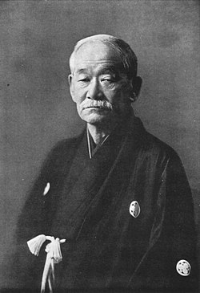

Спортивне дзюдо — це багатогранний вид спорту, що має чіткі правила, особливості та багату історію.
Походження
Японія, 1882 рік
Створене в епоху Мейдзі як модернізована форма традиційного джиу-джитсу, коли Японія активно впроваджувала західні інновації.
Засновник
Дзіґоро Кано
Видатний педагог та реформатор, який прагнув створити систему фізичного та морального виховання. Розробив концепцію "дзюдо", що означає "м'який шлях".
Олімпійський статус
З 1964 року
Дебютувало на Олімпійських іграх у Токіо для чоловіків. Для жінок включено лише у 1992 році в Барселоні. Сьогодні налічує 15 категорій (7 чоловічих, 7 жіночих та 1 змішана).
Техніки
Понад 100 класифікованих прийомів
Включає техніки кидків (наге-ваза), утримань (осаекомі-ваза), больових прийомів (кансецу-ваза) та задушливих (шіме-ваза). Техніки були систематизовані у Кодокан Дзюдо.
Опис напрямку
Спортивне дзюдо — це олімпійський вид спорту, який поєднує в собі елементи бойового мистецтва та спортивної боротьби з чіткими правилами та обмеженнями для забезпечення безпеки учасників.
Принцип дзюдо полягає у максимально ефективному використанні фізичної і духовної сили. Спортивне дзюдо включає в себе техніки кидків, утримань, больових прийомів та задушливих прийомів, але з обмеженнями, які роблять цей вид спорту безпечним для змагань.
На міжнародних змаганнях дзюдоїсти змагаються у різних вагових категоріях, що забезпечує справедливу конкуренцію між спортсменами різної ваги та статури.
В основі дзюдо лежать два фундаментальних принципи: "Сейрьоку Зен'йо" (максимально ефективне використання енергії) та "Дзіта Кьоей" (взаємодопомога і взаємний добробут). Ці принципи впливають не лише на техніку боротьби, але й на філософію спортсмена, формуючи особливий дух дзюдо.
Спортивне дзюдо вимагає від атлетів комбінації фізичних якостей і технічної майстерності. Важливе значення мають сила, гнучкість, швидкість, витривалість, координація та тактичне мислення.
Система рангів у дзюдо
У дзюдо існує чітка система рангів (кю та дан), що відображає рівень майстерності дзюдоїста. Ранги позначаються кольорами поясів та розташовані від початкового 6 кю до найвищого 10 дану.
6 кю
Білий пояс
Початковий рівень
Початківці. Вивчення базових принципів, основних стійок та найпростіших кидків.
5 кю
Жовтий пояс
Учнівський ступінь
Основи укемі (техніка падіння), базові кидки та утримання.
4 кю
Оранжевий пояс
Учнівський ступінь
Поглиблене вивчення техніки кидків, початок вивчення комбінацій.
3 кю
Зелений пояс
Учнівський ступінь
Вивчення більш складних технік та їх застосування в рандорі.
2 кю
Синій пояс
Учнівський ступінь
Відпрацювання складних прийомів, тактики сутички, контр-прийомів.
1 кю
Коричневий пояс
Учнівський ступінь
Високий рівень технічної підготовки, близький до майстерського.
1-5 дан
Чорний пояс
Майстерський ступінь
Майстерські ступені, що відображають високий рівень технічної та тактичної майстерності.
6-8 дан
Червоно-білий пояс
Майстерський ступінь
Високі майстерські ступені, що присвоюються за значний внесок у розвиток дзюдо.
9-10 дан
Червоний пояс
Найвищий ступінь
Найвищі ступені майстерності, що присвоюються видатним майстрам світового рівня.
Примітка: Система рангів може відрізнятися в різних країнах та федераціях дзюдо. В Україні використовується класична система KYU-DAN, визнана Міжнародною федерацією дзюдо (IJF).
Особливості спортивного дзюдо
Спортивне екіпірування
Дзюдоїсти виступають у спеціальному костюмі — дзюдогі, який складається з куртки, штанів і поясу. На офіційних змаганнях перший учасник виходить у білому дзюдогі, а другий — у синьому.
Дзюдогі має відповідати суворим стандартам IJF щодо розмірів, щільності тканини та нашивок. Нестандартна форма може стати причиною дискваліфікації на змаганнях.
Змагальна зона
Змагання проводяться на спеціальному килимі — татамі, який має площу 10х10 метрів із зоною боротьби 8х8 метрів. Ця зона виділена кольором для кращого орієнтування спортсменів.
Навколо робочої зони (8х8 м) розташована зона безпеки шириною 1 метр, що має інший колір. Вихід за межі змагальної зони може вплинути на хід поєдинку, а іноді призводить до штрафних санкцій.
Система оцінок
У сучасному дзюдо існує оцінка "Іппон" (чиста перемога), яка присуджується за ідеальний кидок, утримання протягом 20 секунд або за больовий чи задушливий прийом. Також існує оцінка "Вазарі" (половина перемоги).
Два "Вазарі" прирівнюються до "Іппон". Раніше існували й інші оцінки ("Юко", "Кока"), але вони були скасовані для спрощення правил та підвищення видовищності поєдинків.
Часовий регламент
Стандартний поєдинок в дзюдо триває 4 хвилини для дорослих спортсменів, з можливістю додаткового часу ("Golden Score") у разі нічиєї.
Для юніорів та кадетів тривалість поєдинку становить 4 хвилини, для молодших вікових категорій — 3 хвилини. Час "Golden Score" необмежений і триває до першої оцінки або штрафу.
Порушення правил
Порушення правил караються попередженнями "Шидо". Три "Шидо" дорівнюють дискваліфікації "Хансоку-маке". Пряма дискваліфікація може бути призначена за небезпечні дії або неспортивну поведінку.
До порушень відносяться: пасивне ведення боротьби, неправильні захвати, вихід за межі зони боротьби, заборонені захвати (за ноги), неправильна позиція та інші дії, що суперечать духу дзюдо.
Вагові категорії
У спортивному дзюдо атлети змагаються в різних вагових категоріях, щоб забезпечити рівні можливості для всіх учасників.
Для чоловіків встановлено категорії: -60 кг, -66 кг, -73 кг, -81 кг, -90 кг, -100 кг та +100 кг. Для жінок: -48 кг, -52 кг, -57 кг, -63 кг, -70 кг, -78 кг та +78 кг. Також існує командне змагання у змішаному форматі.
Історія спортивного дзюдо
Дзюдо бере свій початок від бойових мистецтв середньовічної Японії та завдяки візіонерській роботі Дзіґоро Кано перетворилося на сучасний вид спорту, що практикується мільйонами людей по всьому світу.
Зародження (XVI-XIX століття)
Протягом XVI-XVIII століть у Японії розвивалися різні школи джиу-джитсу, що використовувалися самураями для ближнього бою. У 1860-х роках Дзіґоро Кано почав вивчати ці стилі, що пізніше стало основою для створення нової системи.
Становлення (1882-1938)
1882 рік став ключовим, коли Дзіґоро Кано заснував школу Кодокан і створив систему дзюдо. У 1899 році були розроблені перші офіційні правила. У 1909 році Кано став першим японцем у Міжнародному олімпійському комітеті, а в 1911 році дзюдо було включено до японської освітньої системи.
Світове поширення (1939-1980)
У 1930-х роках дзюдо почало поширюватися за межами Японії, з'явилися перші школи в Європі та США. У 1948 році була створена Британська федерація дзюдо, а в 1951 році — Міжнародна федерація дзюдо (IJF). Важливим етапом стало включення дзюдо в програму Олімпійських ігор у Токіо в 1964 році.
Сучасний період (1981-сьогодення)
Жіноче дзюдо було вперше включено до Олімпійських ігор на показових виступах у 1988 році, а в 1992 році стало повноцінною олімпійською дисципліною. У 2000-х роках були введені зміни в правила, спрощена система оцінки (ваза-арі, іппон), а в 2010-х роках посилено акцент на техніку та виключено деякі небезпечні прийоми.
Ключові події в історії дзюдо
XVI-XVIII ст.
Джиу-джитсу
Розвиток різних шкіл джиу-джитсу в Японії.
1860-ті
Дзіґоро Кано
Початок вивчення різних стилів джиу-джитсу.
1882
Заснування Кодокан
Створення школи Кодокан і системи дзюдо.
1899
Перші правила
Розробка перших офіційних правил дзюдо.
1909
МОК
Кано стає першим японцем у Міжнародному олімпійському комітеті.
1911
Освітня система
Включення дзюдо до японської освітньої системи.
1926
Жіноче дзюдо
Формування перших жіночих груп з дзюдо в Кодокані.
1930-ті
Світове поширення
Поява перших шкіл дзюдо в Європі та США.
1948
Британська федерація
Створення Британської федерації дзюдо.
1951
IJF
Заснування Міжнародної федерації дзюдо.
1964
Олімпійський дебют
Дзюдо вперше включено до програми Олімпійських ігор у Токіо.
1988
Жінки на Олімпіаді
Жіноче дзюдо на показових виступах Олімпійських ігор.
1992
Жіноче дзюдо
Жіноче дзюдо стає повноцінною олімпійською дисципліною.
2000-ті
Оновлення правил
Зміни в правилах, спрощення системи оцінки (ваза-арі, іппон).
2010-ті
Технічні зміни
Посилення акценту на техніку, виключення небезпечних прийомів.
2020
Токіо 2020
Дзюдо на Олімпійських іграх з новими змінами в стратегії та правилах.
"Дзюдо — це не просто бойове мистецтво, а філософія, заснована на повазі, самодисципліні та постійному вдосконаленні. Воно об'єднує мільйони людей по всьому світу, допомагаючи не лише розвинути фізичну силу, але й сформувати характер."
— З принципів Кодокан дзюдо
Переваги занять спортивним дзюдо
Заняття дзюдо не лише розвивають фізичні якості, але й формують характер, дисципліну та корисні навички для життя. Розглянемо ключові переваги цього виду спорту.
Фізичний розвиток
Дзюдо залучає всі групи м'язів та розвиває ключові фізичні якості.
Сила і витривалість всього тіла, особливо корпусу та ніг
Координація рухів та чудовий баланс
Гнучкість суглобів та еластичність м'язів
Швидкість реакції та вибухова сила
Ментальний розвиток
Формування психологічної стійкості та стратегічного мислення.
Концентрація уваги навіть у складних умовах
Стресостійкість та самодисципліна
Аналітичне мислення для швидкого прийняття рішень
Впевненість у собі та своїх можливостях
Здоров'я та довголіття
Покращення загального стану здоров'я та зміцнення організму.
Зміцнення імунітету та підвищення опірності
Здорове серце та судинна система
Покращення метаболізму та контроль ваги
Правильна постава та здоровий хребет
Соціальні навички
Розвиток вміння ефективно взаємодіяти з іншими людьми.
Командний дух та вміння працювати в колективі
Повага до старших та колег по тренуванню
Лідерські якості та відповідальність
Емоційний інтелект та комунікабельність
Самозахист
Практичні навички для реальних ситуацій та безпеки.
Ефективні техніки для захисту себе та близьких
Оцінка небезпеки та вміння діяти адекватно
Контроль агресії та ненасильницькі методи
Впевненість і спокій у стресових ситуаціях
Філософія та цінності
Формування особистості та життєвих принципів.
Шлях постійного самовдосконалення (дзюдо-до)
Баланс тіла і розуму для гармонійного розвитку
Чесність і порядність у спорті та житті
Повага до традицій та культурна обізнаність

"В дзюдо фізичний розвиток невіддільний від морального та духовного вдосконалення. Сильне тіло без сильного духу не має цінності."
— Дзіґоро Кано
Основна термінологія дзюдо
Дзюдо використовує японську термінологію для позначення технік, команд та елементів тренування. Знання основних термінів є важливою частиною навчання дзюдо.
Загальні терміни
Основні поняття дзюдо, які необхідно знати кожному, хто починає займатися цим видом спорту.
柔道
Дзюдо
"М'який шлях" – назва бойового мистецтва, створеного Дзіґоро Кано у 1882 році на основі джиу-джитсу.
柔道着
Дзюдогі
Спеціальний костюм для занять дзюдо, що складається з куртки (кімоно), штанів та поясу.
畳
Татамі
Спеціальне покриття для тренувань і змагань, традиційно виготовлене з рисової соломи та тканини.
道場
Додзьо
Місце для тренувань бойових мистецтв, буквально "місце, де вивчають Шлях".
先生
Сенсей
Вчитель, тренер; буквально "той, хто народився раніше" — людина, яка має більше досвіду та знань.
帯
Обі
Пояс, що використовується для підперізування куртки та позначення рівня майстерності.
Команди та етикет
Команди, які використовуються під час тренувань та змагань, а також елементи етикету дзюдо.
礼
Рей
Поклон, вітання, демонстрація поваги до супротивника, тренера або місця тренувань.
始め
Хадзіме
"Починайте" — команда судді для початку поєдинку або відновлення боротьби після паузи.
待て
Мате
"Стоп" — команда судді для тимчасової зупинки поєдинку, після якої учасники повертаються на стартові позиції.
それまで
Соремаде
"Кінець" — команда судді, що означає завершення поєдинку. Після цієї команди оголошується переможець.
押込
Осаекомі
"Утримання почалося" — команда судді, що вказує на початок відліку часу утримання в партері.
正座
Сейдза
Традиційна японська поза сидячи на колінах, яка використовується під час формальних церемоній.
Техніки кидків (Наге-ваза)
Техніки виконання кидків, які застосовуються у стійці і поділяються на кілька груп.
大外刈
Осото-гарі
"Великий зовнішній зачіп" — кидок, при якому атакуючий підсікає ногу противника ззовні, змушуючи його впасти.
一本背負投
Іппон-сеой-наге
"Кидок через спину з захватом руки на плече" — один з найпопулярніших кидків у дзюдо.
内股
Учі-мата
"Підхват зсередини" — кидок, при якому атакуючий підбиває внутрішню частину стегна супротивника своєю ногою.
大腰
О-гоші
"Великий кидок через стегно" — класичний кидок, при якому атакуючий використовує своє стегно як точку опори.
巴投
Томое-наге
"Кидок через голову з упором стопи в живіт" — один з найвидовищніших кидків у дзюдо з групи самопожертви.
背負投
Сеой-наге
"Кидок через спину" — базова техніка, що використовується для кидків противника через спину.
Техніки партеру (Не-ваза)
Техніки, що застосовуються в положенні лежачи: утримання, больові та задушливі прийоми.
袈裟固
Кеса-гатаме
"Утримання збоку" — базова техніка утримання, при якій атакуючий контролює супротивника збоку.
十字固
Джуджі-гатаме
"Хрестоподібний больовий" — больовий прийом на ліктьовий суглоб, при якому рука випрямляється в напрямку проти її природного згину.
三角絞
Санкаку-джіме
"Трикутний задушливий" — задушливий прийом, при якому атакуючий використовує ноги для фіксації шиї супротивника.
横四方固
Йоко-шіхо-гатаме
"Утримання з боку з захватом голови" — техніка утримання, при якій атакуючий контролює голову і руку супротивника.
腕緘
Уде-гарамі
"Замок руки" — больовий прийом на плечовий суглоб, при якому рука супротивника закручується.
肩固
Ката-гатаме
"Утримання з фіксацією плеча" — техніка утримання, при якій атакуючий захоплює шию і плече супротивника.
Змагальні терміни
Терміни, що стосуються змагань, оцінок та штрафів в офіційних турнірах з дзюдо.
一本
Іппон
"Одне ціле" — вища оцінка в дзюдо, що дає миттєву перемогу. Присуджується за ідеальний кидок, 20-секундне утримання або здачу супротивника.
技あり
Вазарі
"Напівперемога" — оцінка, що дається за неідеальний кидок або утримання від 10 до 19 секунд. Два вазарі прирівнюються до іппона.
指導
Шідо
"Попередження" — незначне порушення правил. Три шідо призводять до хансоку-маке (дискваліфікації).
反則負
Хансоку-маке
"Дискваліфікація" — найсерйозніше покарання, що означає програш через серйозне порушення правил або після трьох шідо.
ゴールデンスコア
Голден скор
"Золотий бал" — додатковий час у разі рівного рахунку, який триває до першої оцінки або штрафу.
国際柔道連盟
IJF
Міжнародна федерація дзюдо — головна організація, що розробляє правила та проводить офіційні змагання з дзюдо.
Походження термінів
Всі терміни в дзюдо мають японське походження та записуються ієрогліфами (кандзі). Їх правильна вимова та розуміння значення є важливим аспектом вивчення дзюдо, що підкреслює повагу до його японських коренів.
Крупнійші змагання з дзюдо
Спортивне дзюдо має розгалужену систему національних та міжнародних змагань різного рівня. Ось найпрестижніші турніри світу з дзюдо:
Олімпійські ігри
Найпрестижніші змагання, що проводяться раз на 4 роки. Перемога на Олімпіаді є найвищим досягненням у кар'єрі спортсмена.
Періодичність: Кожні 4 роки
Категорії: 7 чоловічих, 7 жіночих та 1 змішана командна
Перші змагання: 1964 рік (чоловіки), 1992 рік (жінки)
Останні переможці від України: Дар'я Білодід (срібло, 2020), Георгій Зантарая (бронза, 2020)
Чемпіонат світу
Найважливіші змагання після Олімпійських ігор. Проводяться щорічно (окрім олімпійських років) під егідою Міжнародної федерації дзюдо (IJF).
Періодичність: Щорічно (крім років проведення Олімпіад)
Категорії: Індивідуальні та командні змагання
Перші змагання: 1956 рік (чоловіки), 1980 рік (жінки)
Останні переможці від України: Дар'я Білодід (золото, 2019), Георгій Зантарая (золото, 2009)
IJF World Masters
Престижний турнір, що збирає найсильніших дзюдоїстів світу (топ-36 світового рейтингу в кожній ваговій категорії).
Періодичність: Щорічно
Учасники: Топ-36 світового рейтингу
Очки рейтингу: 1800 очок за перемогу (найбільше серед турнірів)
Значення: Найпрестижніший турнір IJF World Tour
IJF Grand Slam
Серія найважливіших міжнародних турнірів, що проводяться в різних країнах світу (Париж, Токіо, Баку та інші міста).
Періодичність: 4-5 турнірів на рік
Очки рейтингу: 1000 очок за перемогу
Статус: Входить до IJF World Tour
Участь: Відкрита для спортсменів високого рівня
Чемпіонат Європи
Найважливіші континентальні змагання для європейських країн. Проводяться під егідою Європейського союзу дзюдо (EJU).
Періодичність: Щорічно
Категорії: Індивідуальні та командні змагання
Перші змагання: 1951 рік
Останні переможці від України: Дар'я Білодід (золото, 2021), Михайло Косяк (бронза, 2022)